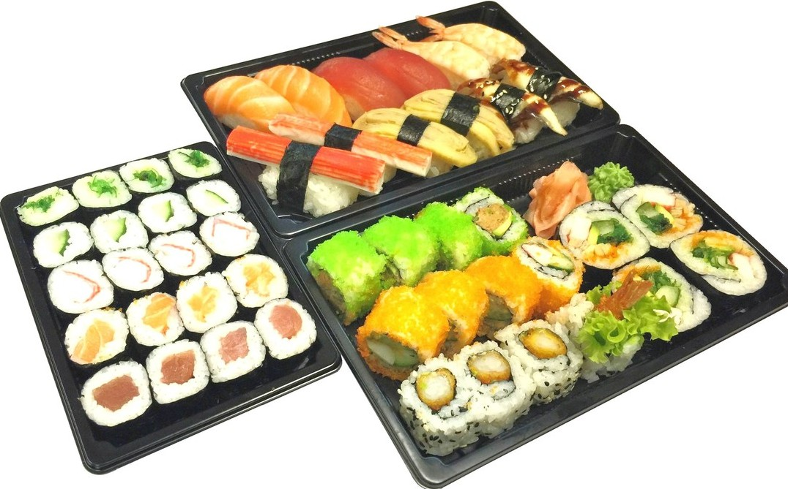
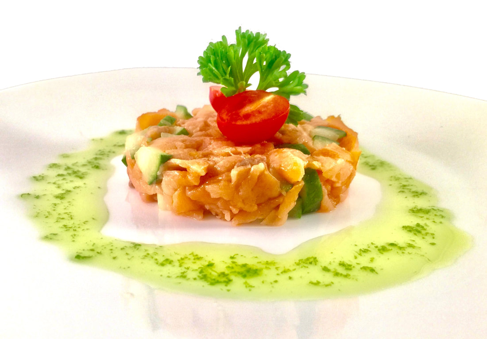

Markt 16 · Schijndel
simpel
Sushi & poké bowl
Verse sushi, poké bowls en warme gerechten. Bestel online voor bezorgen of afhalen, of bel ons direct.
Dagelijks geopend vanaf 16:30

Elke maand een nieuwe deal box
Elke maand stellen we een speciale box samen met hoge korting. Welke box er nu klaarstaat, ziet u op onze bestelsite, in onze app of op Facebook.
Maximaal 2 deal boxen per bestelling. De inhoud van de box kan niet worden aangepast.
Bekijk de deal van deze maandSimpel cadeaubon
Met de Simpel cadeaubon geeft u een heerlijk culinair avondje cadeau. De cadeaubon is in diverse waarden verkrijgbaar. Vraag ernaar in het restaurant of bel 073 689 2433.
Catering & bedrijfsdiner
Feest of bedrijfsevent? Restaurant Simpel verzorgt uw catering op locatie. Graag maken we een afspraak om uw persoonlijke wensen door te nemen.
Diner op maat in ons restaurant
Mogelijk vanaf 15 personen. U stelt zelf uw drie-, vier- of vijfgangendiner samen.
- 3-gangendinerSoep, hoofdgerecht en dessert16,95 p.p.*
- 4-gangendiner + verfrissingVoorgerecht, soep, hoofdgerecht en dessert20,95 p.p.*
- 5-gangendiner + verfrissingVoorgerecht, soep, tussengerecht, hoofdgerecht en dessert24,95 p.p.*
* Voor gezelschappen van 15 tot 25 personen geldt een toeslag van € 2,- per persoon.
Drankarrangement 4 uur
- BasisKoffie, thee en frisdranken11,95 p.p.
- Met bier en wijnKoffie, thee, frisdranken, bier en wijn19,50 p.p.
- CompleetKoffie, thee, frisdranken, bier, wijn, port, sherry, martini, jenever, vieux, Passoa, Malibu, Hugo, gin, wodka en sake27,50 p.p.
Kindermenu 9,95 p.p.
Voorgerecht: soep of salade met fruitcocktail.
Hoofdgerecht: kies & mix, 3 snacks en 2 sauzen uit kipnuggets, bitterballen, mini frikandel, mini loempia, fishsticks en chicken wing.
Groepen kunnen ook voor de lunch reserveren. Bel 073 689 2433 of mail restaurantsimpel@gmail.com.

Langskomen of bestellen
Restaurant SimpelMarkt 16
5482 NE Schijndel
073 689 2433
restaurantsimpel@gmail.com
Openingstijden
| Maandag t/m donderdag | 16:30 – 22:30 |
|---|---|
| Vrijdag en zaterdag | 16:30 – 23:30 |
| Zondag | 16:30 – 22:30 |
Lunch: op reservering geopend voor groepen.
Download ook onze app ‘Restaurant Simpel’ in de App Store of Google Play.